Data Visualization of Massachusetts Covid-19 Data
About the Graphs
The graphs presented are generated from raw data supplied by the Massachusetts Department of Public Health
The trend lines you see are produced using LOESS (locally estimated scatterplot smoothing) and don't reflect a broader, fomulaic regression model. LOESS is useful for 'seeing' trends in the data.
Because MassDPH isn't using a software repository for the data, the graphs have to created manually. You can find the R script that does this on my Github.
Daily Graphs
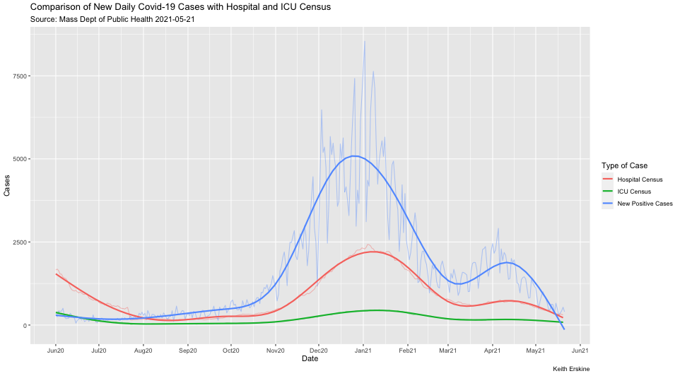 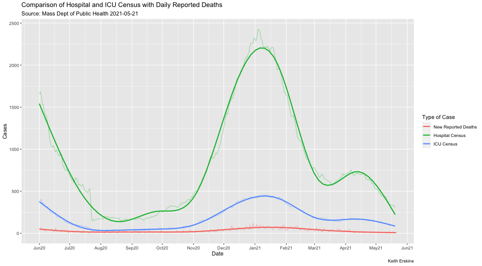 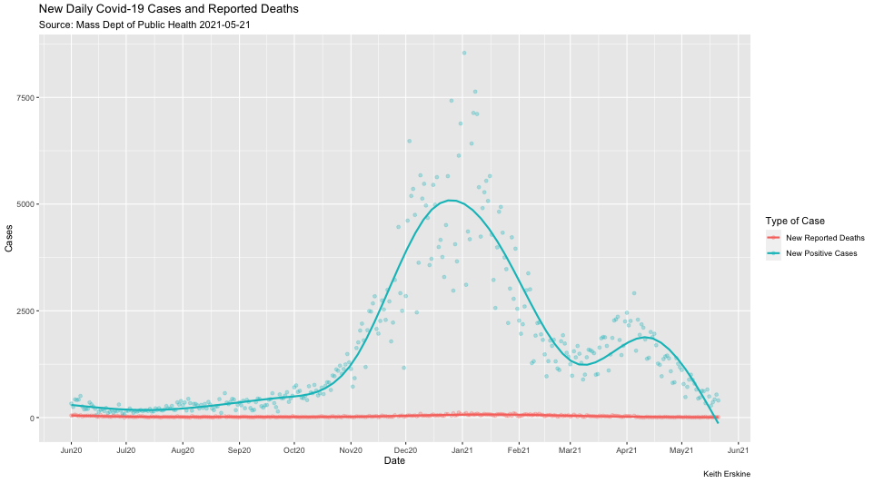
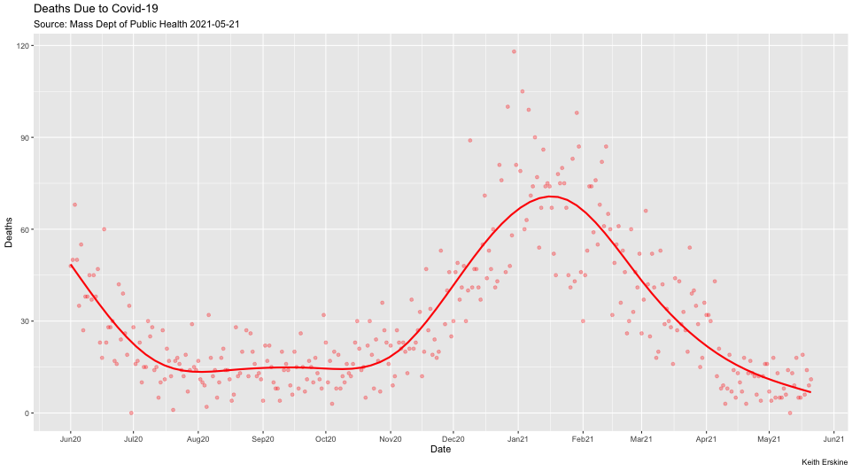
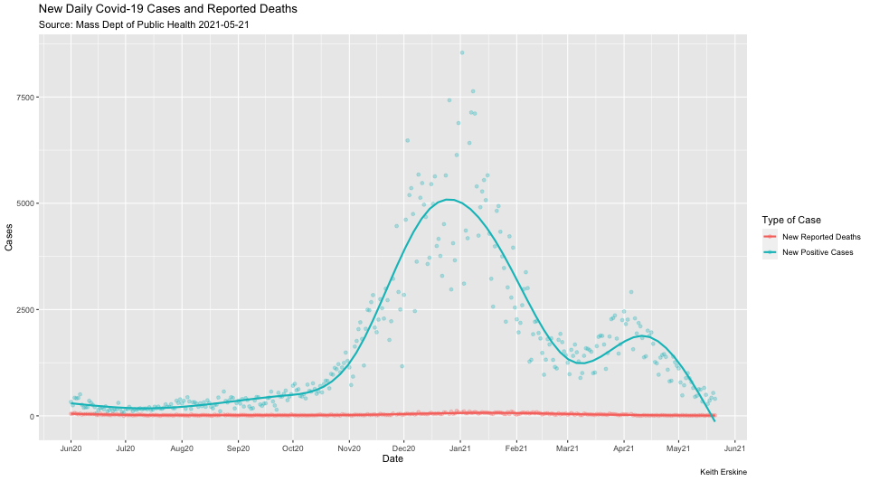
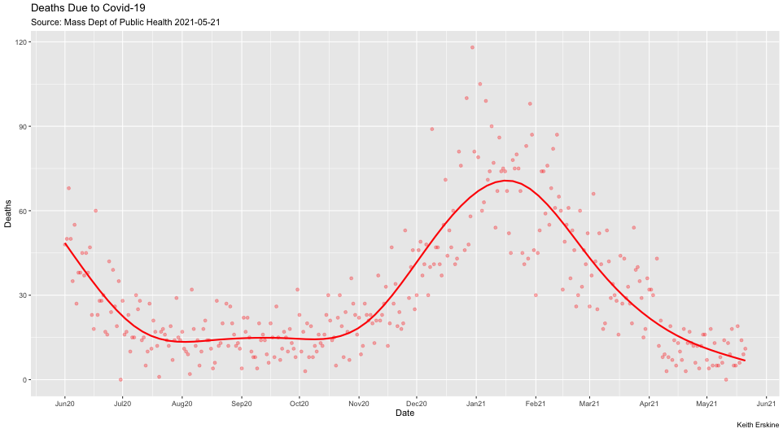
Weekly Graphs
The data presented in the following graphs are readings looking back two weeks. While not optimal (one week's worth of data would be), it does show important trends.
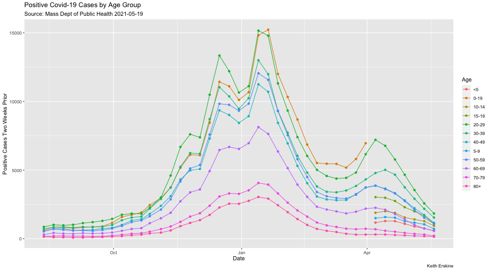 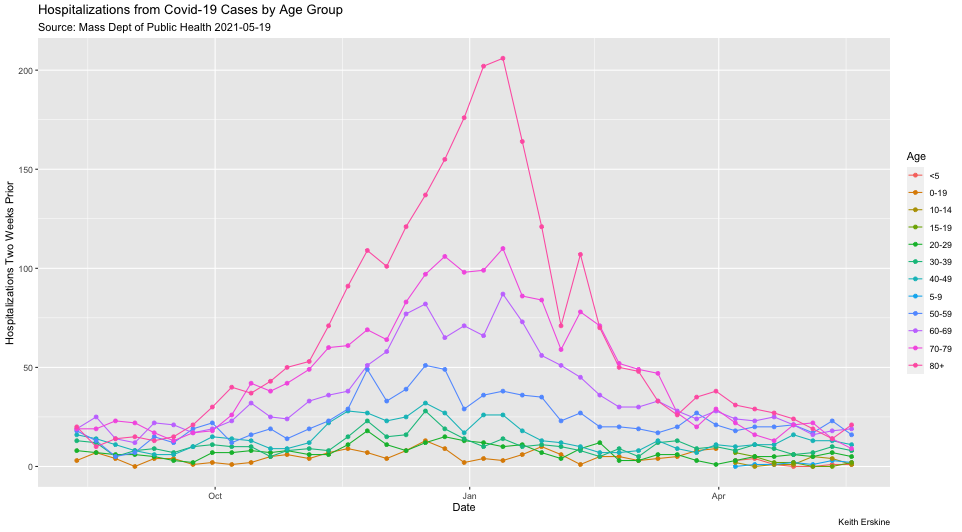
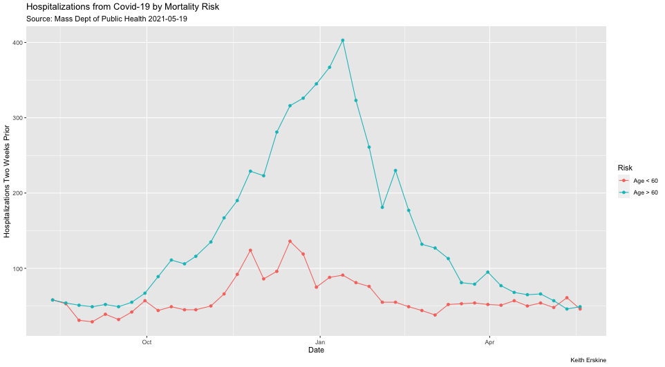
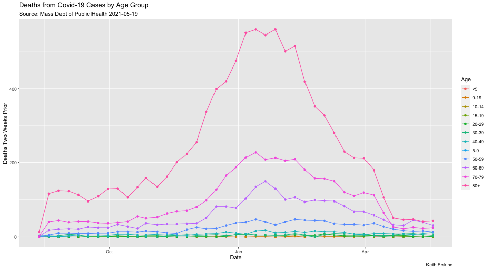
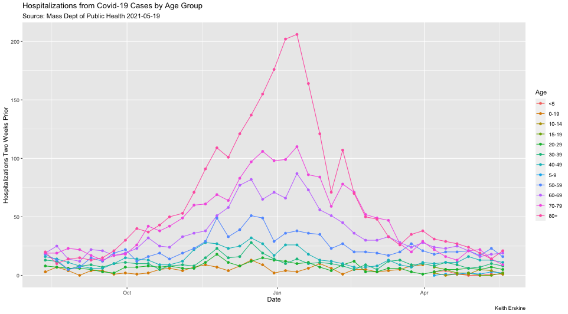
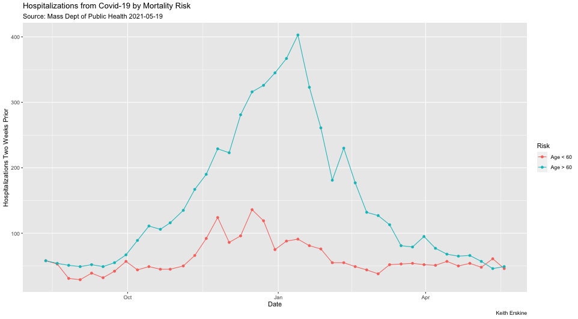
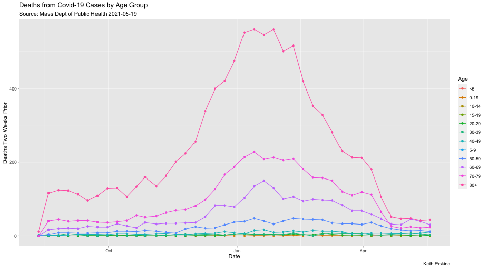